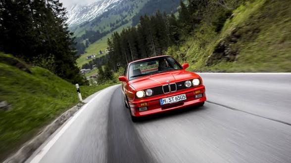
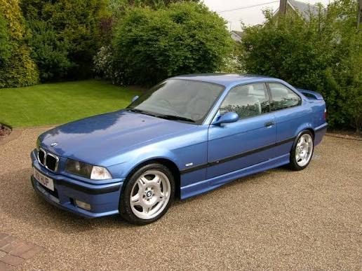
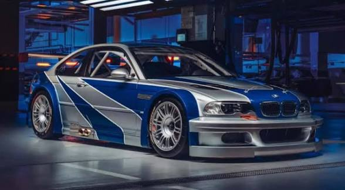
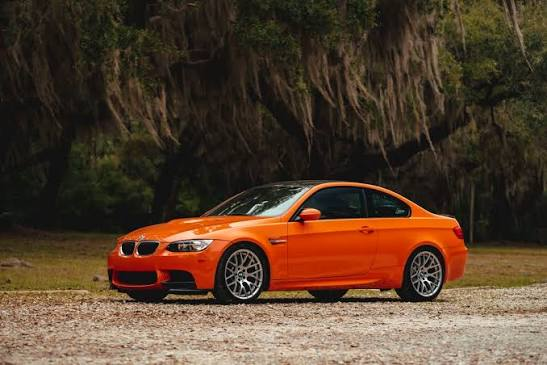
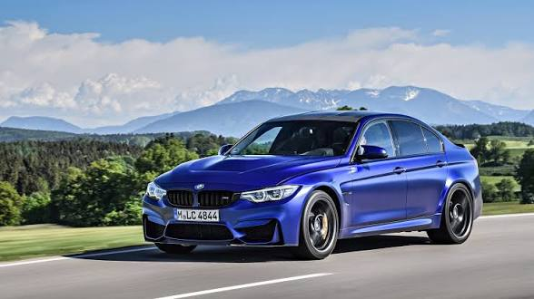
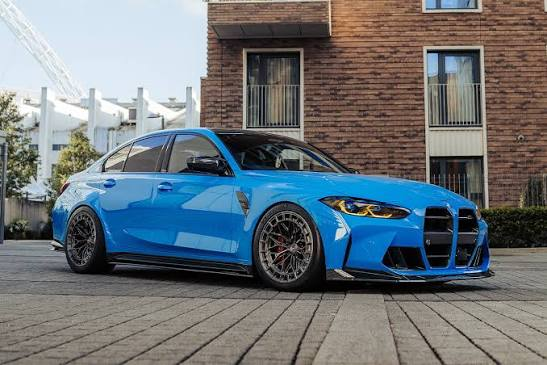

BMW M3 — Хронологія поколінь
BMW M3 (E30) — 1986–1991 роки

🔗 Читати детальніше на Вікіпедії
Опис та історія: Перша M3, розроблена для гонок DTM.
Характеристики: 2.3L R4 (195–238 к.с.), Розгін 0-100 км/год: 6.7 сек.
BMW M3 (E36) — 1992–1999 роки

🔗 Читати детальніше на Вікіпедії
Опис та історія: Друге покоління з рядним 6-циліндровим двигуном.
Характеристики: 3.0L/3.2L R6 (286–321 к.с.), Розгін 0-100 км/год: 5.5 сек.
BMW M3 (E46) — 2000–2006 роки

🔗 Читати детальніше на Вікіпедії
Опис та історія: Легендарна модель з культовим двигуном S54.
Характеристики: 3.2L R6 (343 к.с.), Розгін 0-100 км/год: 5.2 сек.
BMW M3 (E90/E92/E93) — 2007–2013 роки

🔗 Читати детальніше на Вікіпедії
Опис та історія: Єдине покоління M3 з атмосферичним двигуном V8.
Характеристики: 4.0L V8 (420 к.с.), Розгін 0-100 км/год: 4.8 сек.
BMW M3 (F80) — 2014–2018 роки

🔗 Читати детальніше на Вікіпедії
Опис та історія: Повернення до турбованого 6-циліндрового двигуна.
Характеристики: 3.0L Twin-Turbo R6 (431–450 к.с.), Розгін 0-100 км/год: 4.1 сек.
BMW M3 (G80) — 2020–дотепер

🔗 Читати детальніше на Вікіпедії
Опис та історія: Сучасний седан з повним приводом M xDrive.
Характеристики: 3.0L Twin-Turbo R6 (480–510 к.с.), Розгін 0-100 км/год: 3.5 сек.